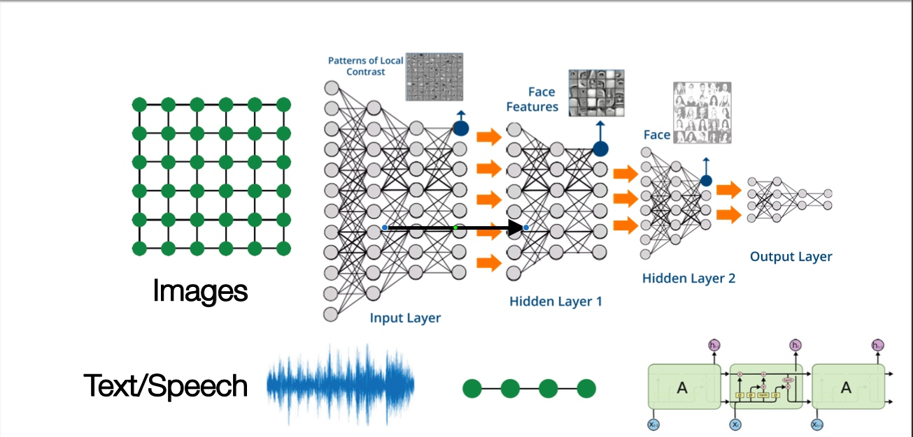
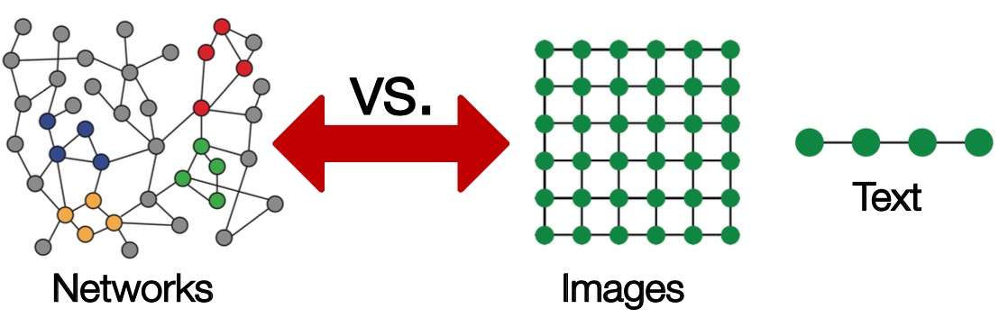
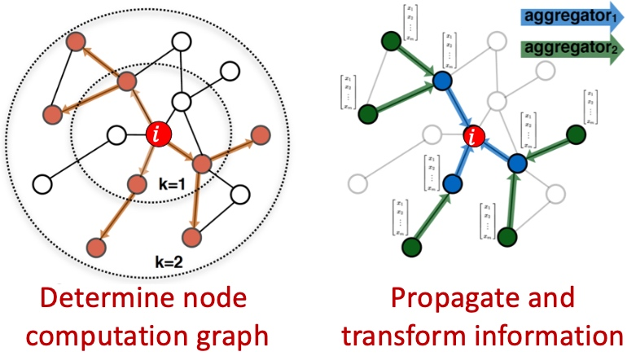
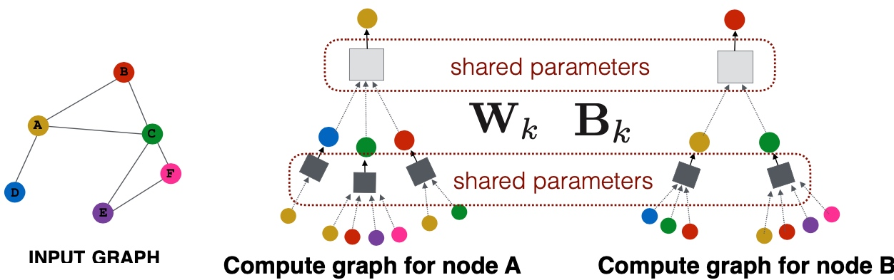
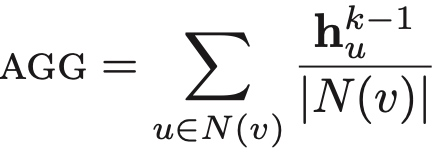
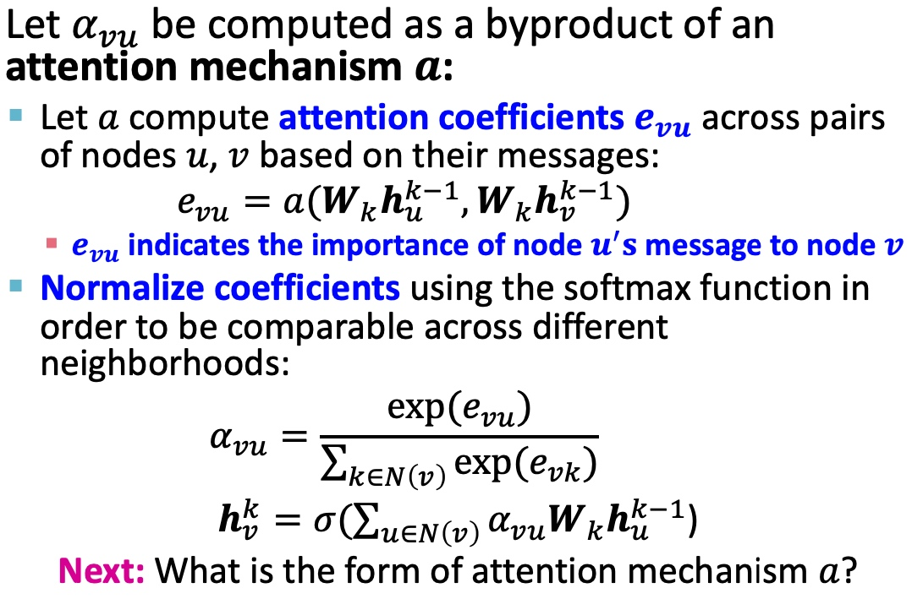

<!doctype html>
<html class="no-js" lang="en">
  <head>
    <meta charset="utf-8" />
    <meta name="viewport" content="width=device-width, initial-scale=1.0" />
    <title>
    
  Graph Neural Networks - 
  
  </title>
 <meta name="description" content="">
 <link href="atom.xml" rel="alternate" title="" type="application/atom+xml">
    <link rel="stylesheet" href="asset/css/foundation.min.css" />
    <link rel="stylesheet" href="asset/css/docs.css" />

    <script src="asset/js/vendor/modernizr.js"></script>
    <script src="asset/js/vendor/jquery.js"></script>
    <script src="asset/highlightjs/highlight.pack.js"></script>
    <link href="asset/highlightjs/styles/github.css" media="screen, projection" rel="stylesheet" type="text/css">
    <script>hljs.initHighlightingOnLoad();</script>
    
  </head>
  <body class="antialiased hide-extras">
    
    <div class="marketing off-canvas-wrap" data-offcanvas>
      <div class="inner-wrap">


<nav class="top-bar docs-bar hide-for-small" data-topbar>

<div id="header">
    <h1><a href="index.html"></a></h1>
</div>

</nav>
        <nav class="tab-bar show-for-small">
  <a href="javascript:void(0)" class="left-off-canvas-toggle menu-icon">
    <span> &nbsp; </span>
  </a>
</nav>

<aside class="left-off-canvas-menu">
      <ul class="off-canvas-list">
      <li><a href="index.html">Home</a></li>
      
        <li class="divider"></li>
        <li><label>推荐系统</label></li>

          
            <li><a title="推荐系统的禅与道" href="15951226773958.html">推荐系统的禅与道</a></li>
          
            <li><a title="推荐系统灌水文之如何理解Item" href="15763400595374.html">推荐系统灌水文之如何理解Item</a></li>
          

      
        <li class="divider"></li>
        <li><label>TensorFlow</label></li>

          
            <li><a title="TensorFlow Sparse的一个优化" href="15768353446694.html">TensorFlow Sparse的一个优化</a></li>
          
            <li><a title="基础知识背景" href="15768070172080.html">基础知识背景</a></li>
          
            <li><a title="TensorFlow优化" href="15744799610685.html">TensorFlow优化</a></li>
          
            <li><a title="GDG上海 2019.10.13分享内容准备" href="15673444950441.html">GDG上海 2019.10.13分享内容准备</a></li>
          
            <li><a title="Dive Into TensorFlow" href="15659603996762.html">Dive Into TensorFlow</a></li>
          
            <li><a title="Maybe Best Practice With Sparse Machine Learning In TensorFlow" href="15430699092916.html">Maybe Best Practice With Sparse Machine Learning In TensorFlow</a></li>
          

      
        <li class="divider"></li>
        <li><label>机器学习平台</label></li>

          
            <li><a title="---" href="16533711069508.html">---</a></li>
          
            <li><a title="机器学习平台在云音乐的持续实践" href="16371350579612.html">机器学习平台在云音乐的持续实践</a></li>
          
            <li><a title="泛模型管理与分发" href="16076083666793.html">泛模型管理与分发</a></li>
          
            <li><a title="机器学习与容器化平台" href="15861773530303.html">机器学习与容器化平台</a></li>
          
            <li><a title="机器学习工程实践" href="15648106167930.html">机器学习工程实践</a></li>
          

      
        <li class="divider"></li>
        <li><label>图计算</label></li>

          
            <li><a title="直播场景PGL落地" href="16078481811620.html">直播场景PGL落地</a></li>
          
            <li><a title="Graph Neural Networks" href="16077533959046.html">Graph Neural Networks</a></li>
          
            <li><a title="graph representation learning" href="16077533959085.html">graph representation learning</a></li>
          
            <li><a title="Spectral Clustering" href="16029890553575.html">Spectral Clustering</a></li>
          
            <li><a title="Community structure in networks" href="16019601035128.html">Community structure in networks</a></li>
          
            <li><a title="Motifs and structural roles in networks" href="16017096445579.html">Motifs and structural roles in networks</a></li>
          
            <li><a title="Properties of Networks and Random Graph Model" href="16016274752497.html">Properties of Networks and Random Graph Model</a></li>
          

      
        <li class="divider"></li>
        <li><label>pytorch</label></li>

          
            <li><a title="pytorch 环境安装及配置" href="15808187045354.html">pytorch 环境安装及配置</a></li>
          

      
        <li class="divider"></li>
        <li><label>分布式系统</label></li>

          
            <li><a title="分布式一致性" href="15860748439491.html">分布式一致性</a></li>
          
            <li><a title="raft 参考文章" href="15854050053037.html">raft 参考文章</a></li>
          
            <li><a title="分布式系统书籍" href="15853877486542.html">分布式系统书籍</a></li>
          
            <li><a title="容灾【备份】" href="15848127872361.html">容灾【备份】</a></li>
          
            <li><a title="容灾【备份】" href="15848127093419.html">容灾【备份】</a></li>
          

      
        <li class="divider"></li>
        <li><label>mlops</label></li>

          
            <li><a title="模型生产环境中的反馈与数据回流" href="16490569390259.html">模型生产环境中的反馈与数据回流</a></li>
          
            <li><a title="mlops之监控与数据回流" href="16482627913984.html">mlops之监控与数据回流</a></li>
          
            <li><a title="为机器学习量身定做的ops工具：cml & dvc" href="16268581441013.html">为机器学习量身定做的ops工具：cml & dvc</a></li>
          
            <li><a title="[toc]" href="16003962131575.html">[toc]</a></li>
          

      
        <li class="divider"></li>
        <li><label>paddle</label></li>

          
            <li><a title="直播场景PGL落地" href="16078655202819.html">直播场景PGL落地</a></li>
          

      
        <li class="divider"></li>
        <li><label>参数服务器</label></li>

          
            <li><a title="ps-lite" href="15836784836219.html">ps-lite</a></li>
          
            <li><a title="ps-lite再一次研读源码" href="15536014868367.html">ps-lite再一次研读源码</a></li>
          

      
        <li class="divider"></li>
        <li><label>GAN</label></li>

          
            <li><a title="深度解析为什么GAN能是Structured Learning的一种解决方案" href="Introduction%20to%20GAN.html">深度解析为什么GAN能是Structured Learning的一种解决方案</a></li>
          

      
      </ul>
    </aside>

<a class="exit-off-canvas" href="#"></a>

        <section id="main-content" role="main" class="scroll-container">

          <div class="row">
            <div class="large-3 medium-3 columns">
              <div class="hide-for-small">
                <div class="sidebar">
                <nav>
                  <ul id="side-nav" class="side-nav">

                    
                      <li class="side-title"><span>推荐系统</span></li>
                        
                          <li><a title="推荐系统的禅与道" href="15951226773958.html">推荐系统的禅与道</a></li>
                        
                          <li><a title="推荐系统灌水文之如何理解Item" href="15763400595374.html">推荐系统灌水文之如何理解Item</a></li>
                        

                    
                      <li class="side-title"><span>TensorFlow</span></li>
                        
                          <li><a title="TensorFlow Sparse的一个优化" href="15768353446694.html">TensorFlow Sparse的一个优化</a></li>
                        
                          <li><a title="基础知识背景" href="15768070172080.html">基础知识背景</a></li>
                        
                          <li><a title="TensorFlow优化" href="15744799610685.html">TensorFlow优化</a></li>
                        
                          <li><a title="GDG上海 2019.10.13分享内容准备" href="15673444950441.html">GDG上海 2019.10.13分享内容准备</a></li>
                        
                          <li><a title="Dive Into TensorFlow" href="15659603996762.html">Dive Into TensorFlow</a></li>
                        
                          <li><a title="Maybe Best Practice With Sparse Machine Learning In TensorFlow" href="15430699092916.html">Maybe Best Practice With Sparse Machine Learning In TensorFlow</a></li>
                        

                    
                      <li class="side-title"><span>机器学习平台</span></li>
                        
                          <li><a title="---" href="16533711069508.html">---</a></li>
                        
                          <li><a title="机器学习平台在云音乐的持续实践" href="16371350579612.html">机器学习平台在云音乐的持续实践</a></li>
                        
                          <li><a title="泛模型管理与分发" href="16076083666793.html">泛模型管理与分发</a></li>
                        
                          <li><a title="机器学习与容器化平台" href="15861773530303.html">机器学习与容器化平台</a></li>
                        
                          <li><a title="机器学习工程实践" href="15648106167930.html">机器学习工程实践</a></li>
                        

                    
                      <li class="side-title"><span>图计算</span></li>
                        
                          <li><a title="直播场景PGL落地" href="16078481811620.html">直播场景PGL落地</a></li>
                        
                          <li><a title="Graph Neural Networks" href="16077533959046.html">Graph Neural Networks</a></li>
                        
                          <li><a title="graph representation learning" href="16077533959085.html">graph representation learning</a></li>
                        
                          <li><a title="Spectral Clustering" href="16029890553575.html">Spectral Clustering</a></li>
                        
                          <li><a title="Community structure in networks" href="16019601035128.html">Community structure in networks</a></li>
                        
                          <li><a title="Motifs and structural roles in networks" href="16017096445579.html">Motifs and structural roles in networks</a></li>
                        
                          <li><a title="Properties of Networks and Random Graph Model" href="16016274752497.html">Properties of Networks and Random Graph Model</a></li>
                        

                    
                      <li class="side-title"><span>pytorch</span></li>
                        
                          <li><a title="pytorch 环境安装及配置" href="15808187045354.html">pytorch 环境安装及配置</a></li>
                        

                    
                      <li class="side-title"><span>分布式系统</span></li>
                        
                          <li><a title="分布式一致性" href="15860748439491.html">分布式一致性</a></li>
                        
                          <li><a title="raft 参考文章" href="15854050053037.html">raft 参考文章</a></li>
                        
                          <li><a title="分布式系统书籍" href="15853877486542.html">分布式系统书籍</a></li>
                        
                          <li><a title="容灾【备份】" href="15848127872361.html">容灾【备份】</a></li>
                        
                          <li><a title="容灾【备份】" href="15848127093419.html">容灾【备份】</a></li>
                        

                    
                      <li class="side-title"><span>mlops</span></li>
                        
                          <li><a title="模型生产环境中的反馈与数据回流" href="16490569390259.html">模型生产环境中的反馈与数据回流</a></li>
                        
                          <li><a title="mlops之监控与数据回流" href="16482627913984.html">mlops之监控与数据回流</a></li>
                        
                          <li><a title="为机器学习量身定做的ops工具：cml & dvc" href="16268581441013.html">为机器学习量身定做的ops工具：cml & dvc</a></li>
                        
                          <li><a title="[toc]" href="16003962131575.html">[toc]</a></li>
                        

                    
                      <li class="side-title"><span>paddle</span></li>
                        
                          <li><a title="直播场景PGL落地" href="16078655202819.html">直播场景PGL落地</a></li>
                        

                    
                      <li class="side-title"><span>参数服务器</span></li>
                        
                          <li><a title="ps-lite" href="15836784836219.html">ps-lite</a></li>
                        
                          <li><a title="ps-lite再一次研读源码" href="15536014868367.html">ps-lite再一次研读源码</a></li>
                        

                    
                      <li class="side-title"><span>GAN</span></li>
                        
                          <li><a title="深度解析为什么GAN能是Structured Learning的一种解决方案" href="Introduction%20to%20GAN.html">深度解析为什么GAN能是Structured Learning的一种解决方案</a></li>
                        

                    
                  </ul>
                </nav>
                </div>
              </div>
            </div>
            <div class="large-9 medium-9 columns">

 <div class="markdown-body">
<h1>Graph Neural Networks</h1>

<p></p>
<p>经典的机器学习框架主要支持包括Images和Text/Speech 这两种数据，主要设计用来解决sequence、grids问题， 而Graph 结构相对较为复杂：<br />
</p>
<ul>
<li>无法产生特定顺序的节点序列，因而很难转换为普通序列问题；</li>
<li>图结构频繁变化，且通常需要建模多模态特征；</li>
</ul>
<h2><a id="basics-of-deep-learning-for-graphs" class="anchor" aria-hidden="true" href="#basics-of-deep-learning-for-graphs"><span class="octicon octicon-link"></span></a>Basics of deep learning for graphs</h2>
<p>假定存在图G，其中V表示节点集合，A是邻接矩阵，\(X \in R^{m*|V|}\)是节点的特征矩阵（a matrix of node features）。这里的节点特征，根据不同的网络有不同的定义——如在社交网络里面，节点特征就包括用户资料、用户年龄等；在生物网络里面，节点的特征就包括基因表达、基因序列等；如果节点没有特征，就可以用one-hot编码表示或者常数向量 1: [ 1 , 1 , … , 1 ] [1, 1, …, 1][1,1,…,1]来表示节点的特征。</p>
<h3><a id="local-network-neighborhoods" class="anchor" aria-hidden="true" href="#local-network-neighborhoods"><span class="octicon octicon-link"></span></a>Local Network neighborhoods</h3>
<pre><code>节点的邻居定义计算图， 能够有效地建模信息的传播；
</code></pre>
<p></p>
<p>如上图，根据节点邻居得到计算图， 然后根据计算图生成节点的向量表示，如下图，A的节点表示由其邻居节点{B,C,D}，而这些节点又由其邻居节点决定，形成如下图的计算图，其中方形框即为其聚合邻居节点的策略，可采用average操作：<br />
</p>
<p>由此，可将图中任意节点，根据其邻居节点，生成对应的计算图。</p>
<h3><a id="stacking-multiple-layers" class="anchor" aria-hidden="true" href="#stacking-multiple-layers"><span class="octicon octicon-link"></span></a>Stacking multiple layers</h3>
<p>上一小节示意图中，使用节点的最高至二阶邻居点，即邻居的邻居来生成某节点的计算图，也可以使用任意深度的模型来表示，即图神经网络中层的概念：</p>
<ul>
<li>任意节点在每一层均有对应的向量表示；</li>
<li>layer-0的向量表示即模型的输入特征\(x_{u}\);</li>
<li>layer-k的向量表示，即节点经过k层邻居之后的向量表示；<br />
因而，Graph Neural Network能够通过叠加layer建模更高阶信息。</li>
</ul>
<p>Graph Neural Network整体架构到这里其实基本上就讲完了，而不同的上述各种图中的方形框内部的计算逻辑。</p>
<p></p>
<p>一个有效的方法即GCN的思路是， 在入口对接收到的message平均化， 多阶的信息由邻居的邻居的信息传播来进行建模， 和常见的深度学习模型没啥差别：</p>
<p></p>
<h3><a id="%E6%A8%A1%E5%9E%8B%E8%AE%AD%E7%BB%83" class="anchor" aria-hidden="true" href="#%E6%A8%A1%E5%9E%8B%E8%AE%AD%E7%BB%83"><span class="octicon octicon-link"></span></a>模型训练</h3>
<p>模型训练基本方式和常规的深度学习方式基本一致， 构建神经网络结构，通过构造loss函数，使用梯度下降方法，对模型参数进行更新，以最小化loss函数值：<br />
</p>
<h4><a id="%E9%9D%9E%E7%9B%91%E7%9D%A3%E6%96%B9%E5%BC%8F" class="anchor" aria-hidden="true" href="#%E9%9D%9E%E7%9B%91%E7%9D%A3%E6%96%B9%E5%BC%8F"><span class="octicon octicon-link"></span></a>非监督方式</h4>
<p>基于图神经网络的非监督方式相对于传统的深度学习方式更加流行，其通常利用graph结构信息（其实也可以拼接slide info，slide未提），保证在graph中有相似的节点，有相似的特征表示。常见的模型包括：random walk系列（node2vec， DeepWalk， Struc2vec）， Graph Factorization， Node Proximity in the graph</p>
<h4><a id="%E6%9C%89%E7%9B%91%E7%9D%A3%E6%96%B9%E5%BC%8F" class="anchor" aria-hidden="true" href="#%E6%9C%89%E7%9B%91%E7%9D%A3%E6%96%B9%E5%BC%8F"><span class="octicon octicon-link"></span></a>有监督方式</h4>
<p>有监督方式的loss函数，根据不同任务类型来定义，如在常见的节点分类任务，如互联网中判断某节点是否为薅羊毛党，其为二元分类问题，通常采用交叉熵来表征其loss函数：<br />
</p>
<h4><a id="%E6%A8%A1%E5%9E%8B%E8%AE%BE%E8%AE%A1%E5%9B%9E%E9%A1%BE" class="anchor" aria-hidden="true" href="#%E6%A8%A1%E5%9E%8B%E8%AE%BE%E8%AE%A1%E5%9B%9E%E9%A1%BE"><span class="octicon octicon-link"></span></a>模型设计回顾</h4>
<p><strong>定义邻居聚合函数与loss函数:</strong><br />
<br />
<strong>按邻居节点生成批计算图</strong><br />
<br />
<strong>生成图节点的向量表示</strong><br />
</p>
<p><br />
对于计算图中，同一layer中的节点采用共享的参数表示，其参数彼此共享，且针对新图或者图中的新出现节点，均同样适用。</p>
<h2><a id="graph-convolutional-networks-and-graphsage" class="anchor" aria-hidden="true" href="#graph-convolutional-networks-and-graphsage"><span class="octicon octicon-link"></span></a>Graph Convolutional Networks and GraphSAGE</h2>
<h3><a id="%E5%9F%BA%E6%9C%AC%E4%BB%8B%E7%BB%8D" class="anchor" aria-hidden="true" href="#%E5%9F%BA%E6%9C%AC%E4%BB%8B%E7%BB%8D"><span class="octicon octicon-link"></span></a>基本介绍</h3>
<p>如前文所述，在邻居节点聚合操作时，我们采用average操作，那么是否有更多通用的方式呢？GraphSAGE的思路是采用一个通用的aggregation函数来表示方形框的计算，并将其与本身的向量表示拼接起来，aggregation函数要保证可微分。</p>
<p></p>
<p>常见的Aggregation如下：</p>
<ul>
<li>
<p>Mean： </p>
</li>
<li>
<p>Pool: </p>
</li>
<li>
<p>LSTM: </p>
</li>
</ul>
<h3><a id="%E5%9B%9E%E9%A1%BE" class="anchor" aria-hidden="true" href="#%E5%9B%9E%E9%A1%BE"><span class="octicon octicon-link"></span></a>回顾</h3>
<p>如下图， 图神经网络通过建模邻居节点的方式来解决图节点向量化的难题，通过多层高阶graph layer来聚合不同阶邻居的信息，并构建Graph计算图，来训练得到节点向量化表示，其中GCN为最基础方式，其聚合函数采取平均策略，而GraphSAGE设计通用的邻居聚合函数，如mean、pool、LSTM等等。<br />
<br />
关于GNN的一些论文：</p>
<pre><code>Tutorials and overviews:
§ Relational inductive biases and graph networks (Battaglia et al., 2018)
§ Representation learning on graphs: Methods and applications (Hamilton et al., 2017)
Attention-based neighborhood aggregation:
§ Graph attention networks (Hoshen, 2017; Velickovic et al., 2018; Liu et al., 2018)
Embedding entire graphs:
§ Graph neural nets with edge embeddings (Battaglia et al., 2016; Gilmer et. al., 2017)
§ Embedding entire graphs (Duvenaud et al., 2015; Dai et al., 2016; Li et al., 2018) and graph pooling
(Ying et al., 2018, Zhang et al., 2018)
§ Graph generation and relational inference (You et al., 2018; Kipf et al., 2018)
§ How powerful are graph neural networks(Xu et al., 2017)
Embedding nodes:
§ Varying neighborhood: Jumping knowledge networks (Xu et al., 2018), GeniePath (Liu et al., 2018) § Position-aware GNN (You et al. 2019)
Spectral approaches to graph neural networks:
§ Spectral graph CNN &amp; ChebNet (Bruna et al., 2015; Defferrard et al., 2016) § Geometric deep learning (Bronstein et al., 2017; Monti et al., 2017)
Other GNN techniques:
§ Pre-training Graph Neural Networks (Hu et al., 2019)
§ GNNExplainer: Generating Explanations for Graph Neural Networks (Ying et al., 2019)
</code></pre>
<h2><a id="graph-attention-networks" class="anchor" aria-hidden="true" href="#graph-attention-networks"><span class="octicon octicon-link"></span></a>Graph Attention Networks</h2>
<p>GAT顾名思义，需要考虑邻居节点中，对最终结果的不同的影响，因而引入attention机制，attention在经典的深度学习网络中十分常见，如transformer的self-attention，</p>
<h3><a id="attention-mechanism" class="anchor" aria-hidden="true" href="#attention-mechanism"><span class="octicon octicon-link"></span></a>Attention Mechanism</h3>
<p>如下图， \(e_{uv}\)可以通过两个节点之间的信息流得到, \(e_{vu}\)表示节点u的信息对节点v的重要性, 使用softmax进行归一化，以便在不同的节点间存在可比性，然后集成在模型聚合函数中来建模不同节点对当前节点信息的重要性。<br />
<br />
其他另外过程和原先GCN、graphSAGE没什么差别，除了attention信息也会参与训练。</p>


</div>

<br /><br />
<hr />

<div class="row clearfix">
  <div class="large-6 columns">
	<div class="text-left" style="padding:15px 0px;">
		
	        <a href="16078655202819.html"  title="Previous Post: 直播场景PGL落地">&laquo; 直播场景PGL落地</a>
	    
	</div>
  </div>
  <div class="large-6 columns">
	<div class="text-right" style="padding:15px 0px;">
		
	        <a href="16077533959085.html" 
	        title="Next Post: graph representation learning">graph representation learning &raquo;</a>
	    
	</div>
  </div>
</div>

<div class="row">
<div style="padding:0px 0.93em;" class="share-comments">

</div>
</div>
<script type="text/javascript">
	$(function(){
		var currentURL = '16077533959046.html';
		$('#side-nav a').each(function(){
			if($(this).attr('href') == currentURL){
				$(this).parent().addClass('active');
			}
		});
	});
</script>  
</div></div>


<div class="page-bottom">
  <div class="row">
  <hr />
  <div class="small-9 columns">
  <p class="copyright">Copyright &copy; 2015
Powered by <a target="_blank" href="http://www.mweb.im">MWeb</a>,&nbsp; 
Theme used <a target="_blank" href="http://github.com">GitHub CSS</a>.</p>
  </div>
  <div class="small-3 columns">
  <p class="copyright text-right"><a href="#header">TOP</a></p>
  </div>
   
  </div>
</div>

        </section>
      </div>
    </div>
    


<script type="text/javascript" src="https://cdnjs.cloudflare.com/ajax/libs/mathjax/2.7.7/MathJax.js?config=TeX-AMS-MML_HTMLorMML"></script>
<script type="text/x-mathjax-config">MathJax.Hub.Config({TeX: { equationNumbers: { autoNumber: "AMS" } }});</script>

  


<script src="asset/prism.js"></script>


<style type="text/css">
figure{margin: 0.4em 0;padding: 0;}
  figcaption{text-align:center;}

/* PrismJS 1.14.0
 http://prismjs.com/download.html#themes=prism&languages=markup+css+clike+javascript */
/**
 * prism.js default theme for JavaScript, CSS and HTML
 * Based on dabblet (http://dabblet.com)
 * @author Lea Verou
 */

code[class*="language-"],
pre[class*="language-"] {
    color: black;
    background: none;
    text-shadow: 0 1px white;
    font-family: Consolas, Monaco, 'Andale Mono', 'Ubuntu Mono', monospace;
    text-align: left;
    white-space: pre;
    word-spacing: normal;
    word-break: normal;
    word-wrap: normal;
    line-height: 1.5;
    
    -moz-tab-size: 4;
    -o-tab-size: 4;
    tab-size: 4;
    
    -webkit-hyphens: none;
    -moz-hyphens: none;
    -ms-hyphens: none;
    hyphens: none;
}

pre[class*="language-"]::-moz-selection, pre[class*="language-"] ::-moz-selection,
code[class*="language-"]::-moz-selection, code[class*="language-"] ::-moz-selection {
    text-shadow: none;
    background:#b3d4fc;
}

pre[class*="language-"]::selection, pre[class*="language-"] ::selection,
code[class*="language-"]::selection, code[class*="language-"] ::selection {
    text-shadow: none;
    background: #b3d4fc;
}

@media print {
    code[class*="language-"],
    pre[class*="language-"] {
        text-shadow: none;
    }
}

/* Code blocks */
pre[class*="language-"] {
    padding: 1em;
    margin: .5em 0;
    overflow: auto;
}

:not(pre) > code[class*="language-"],
pre[class*="language-"] {
    background: #F7F7F7;
}

/* Inline code */
:not(pre) > code[class*="language-"] {
    padding: .1em;
    border-radius: .3em;
    white-space: normal;
}

.token.comment,
.token.prolog,
.token.doctype,
.token.cdata {
    color: slategray;
}

.token.punctuation {
    color: #999;
}

.namespace {
    opacity: .7;
}

.token.property,
.token.tag,
.token.boolean,
.token.number,
.token.constant,
.token.symbol,
.token.deleted {
    color: #905;
}

.token.selector,
.token.attr-name,
.token.string,
.token.char,
.token.builtin,
.token.inserted {
    color: #690;
}

.token.operator,
.token.entity,
.token.url,
.language-css .token.string,
.style .token.string {
    color: #9a6e3a;
    background: hsla(0, 0%, 100%, .5);
}

.token.atrule,
.token.attr-value,
.token.keyword {
    color: #07a;
}

.token.function,
.token.class-name {
    color: #DD4A68;
}

.token.regex,
.token.important,
.token.variable {
    color: #e90;
}

.token.important,
.token.bold {
    font-weight: bold;
}
.token.italic {
    font-style: italic;
}

.token.entity {
    cursor: help;
}


pre[class*="language-"].line-numbers {
    position: relative;
    padding-left: 3.8em;
    counter-reset: linenumber;
}

pre[class*="language-"].line-numbers > code {
    position: relative;
    white-space: inherit;
}

.line-numbers .line-numbers-rows {
    position: absolute;
    pointer-events: none;
    top: 0;
    font-size: 100%;
    left: -3.8em;
    width: 3em; /* works for line-numbers below 1000 lines */
    letter-spacing: -1px;
    border-right: 1px solid #999;

    -webkit-user-select: none;
    -moz-user-select: none;
    -ms-user-select: none;
    user-select: none;

}

    .line-numbers-rows > span {
        pointer-events: none;
        display: block;
        counter-increment: linenumber;
    }

        .line-numbers-rows > span:before {
            content: counter(linenumber);
            color: #999;
            display: block;
            padding-right: 0.8em;
            text-align: right;
        }


</style>
    
    <script src="asset/js/foundation.min.js"></script>
    <script src="asset/js/foundation/foundation.offcanvas.js"></script>
    <script>
      $(document).foundation();

     
    </script>


  </body>
</html>
